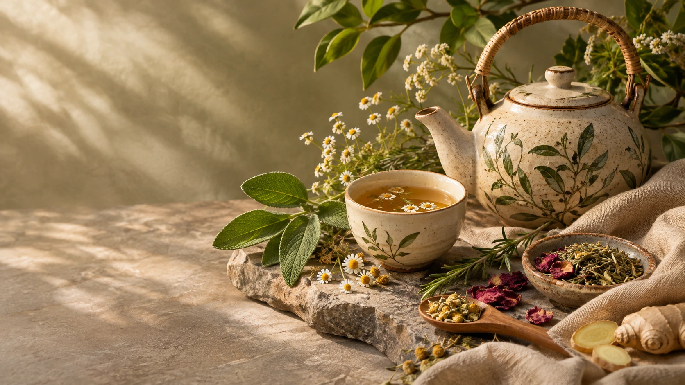
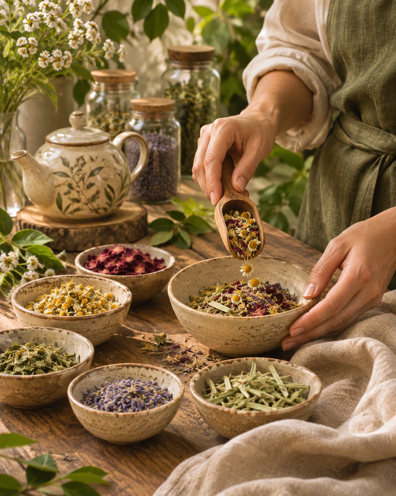

ATELIÊ DE CHÁS ORGÂNICOS
A vida em cada folha.
Selecionamos chás especiais e infusões botânicas de pequenos produtores, unindo cultivo orgânico, processos artesanais e o tempo sereno de cada colheita.

ATELIÊ DE CHÁS ORGÂNICOS
Selecionamos chás especiais e infusões botânicas de pequenos produtores, unindo cultivo orgânico, processos artesanais e o tempo sereno de cada colheita.


SOBRE A FOLIVITA
A Folivita nasceu do desejo de transformar o ato de preparar chá em um encontro genuíno com a natureza. Como um ateliê especializado na seleção e comercialização de chás e infusões botânicas, valorizamos ingredientes naturais, pequenos produtores e processos artesanais.
Cada folha carrega um território, um clima e uma história para contar — dos cultivos orgânicos em altitude na Serra da Mantiqueira às flores secas à sombra em pequenas propriedades familiares.
Proporcionar uma experiência sensorial e acolhedora por meio de chás e infusões orgânicas de procedência transparente, conectando pessoas à vitalidade das plantas e ao trabalho de pequenos produtores.
Ser referência nacional como ateliê contemporâneo de chás especiais, cultivando uma cultura de autocuidado, respeito ao ciclo das colheitas e apreço pela gastronomia botânica.
Guiamos cada criação por cinco pilares essenciais que definem nossa identidade:
PRINCIPAIS CRIAÇÕES · SOB ENCOMENDA
Trabalhamos em pequenos lotes preparados sob encomenda, garantindo frescor máximo e seleção artesanal para cada pedido. Navegue pelas nossas cinco criações principais:
EXPERIÊNCIA FOLIVITA
Explore nossas orientações de preparo, a pureza dos ingredientes botânicos e sugestões para cada momento do dia.

PASSO 1
Utilize 2g de folhas soltas (cerca de 1 colher de chá cheia) para cada 200 ml de água filtrada. Folhas inteiras precisam de espaço no infusor para expandir.

PASSO 2
Chás verdes pedem água entre 75°C e 80°C (antes da fervura) para não amargar. Chás pretos e infusões de flores suportam 92°C a 96°C.

PASSO 3
Respeite de 2 a 3 minutos para folhas verdes, 4 minutos para chás pretos e até 6 minutos para infusões botânicas. Reinfusione as mesmas folhas até duas vezes.
Nossos lotes são preparados de forma artesanal e sob demanda. Escolha o blend desejado para encomendar ou envie sua dúvida sobre curadorias e presentes gourmet.